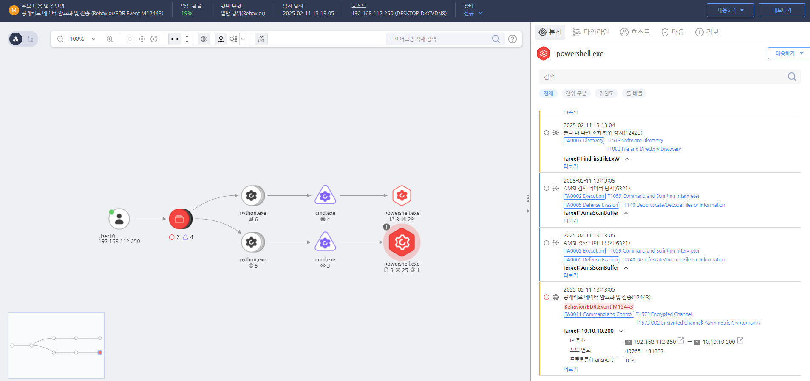

T1573.002.01 Encrypted Channel Using Asymmetric Cryptography
D3FEND
MITRE ATT&CK 액션을 기준으로 대응 방안을 작성
Detection
파워쉘(Powershell)의 비대칭 암호화 알고리즘을 이용하여 데이터를 암호화 및 전송하는 행위를 확인합니다.
Detection(EDR)

https://172.18.10.125:8903/#/analysis/incident/67aad02b002dc6cc000002f4
Response
비정상적인 프로세스의 암호화 또는 네트워크 연결이 발견되면 종료합니다.
Mitigations
1. 암호화된 트래픽 검사
- 중간자 공격(MITM) 방식으로 암호화된 트래픽을 해독하여 검사하는 시스템을 배치합니다. 이를 위해 SSL/TLS 인프라를 관리하고, 트래픽에 대해 심층 패킷 검사(Deep Packet Inspection, DPI)를 수행합니다.
- SSL/TLS 검사를 통해 애플리케이션 계층에서 암호화된 통신을 분석하고, 악성 트래픽이나 C2 통신을 탐지합니다.
2. HTTPS 및 기타 암호화 프로토콜에 대한 검증 및 제어
- 서버 인증서 검증을 강화하여 인증되지 않은 서버와의 연결을 방지합니다.
- 비표준 포트를 사용하는 암호화된 프로토콜 연결을 차단하고, 필수적인 포트와 프로토콜만을 허용합니다.
- 웹 필터링 및 DNS 보안을 통해 악의적인 웹사이트나 서버에 대한 접근을 차단하고, 의심스러운 도메인과의 연결을 방지합니다.
3. 애플리케이션 계층 보안 강화
- 애플리케이션에서 정기적인 보안 패치와 업데이트를 적용하여 취약점을 악용한 공격을 차단합니다.
- 애플리케이션 방화벽(WAF)을 사용하여 애플리케이션 계층에서 발생할 수 있는 악성 요청을 차단하고, 의심스러운 트래픽을 탐지합니다.
- 알려진 악성 프로토콜에 대한 필터링을 설정하여 악성 트래픽을 차단합니다.
4. 로그 및 모니터링 강화
- HTTPS 트래픽의 암호화된 부분을 검사할 수 없더라도, 접속 시도 로그와 비정상적인 패턴을 모니터링합니다.
- SIEM(Security Information and Event Management) 시스템을 사용하여 암호화된 트래픽의 발생지점, 빈도, 대상 등을 기록하고, 의심스러운 활동을 실시간으로 탐지합니다.
- 네트워크 트래픽 분석 및 비정상적인 연결에 대한 경고를 설정하여 C2 통신이나 데이터 유출을 탐지합니다.
5. 다단계 인증(MFA) 적용
- 애플리케이션 및 서버에서 다단계 인증(MFA)을 적용하여, 암호화된 채널을 통해 불법적인 접근이 발생하더라도 추가적인 보안 계층을 제공합니다.
- 세션 관리 및 인증 강화를 통해 단일 계정으로의 접근을 제한하고, 불법적인 접근을 차단합니다.
6. 사용자 교육 및 인식 제고
- 정기적인 보안 교육을 통해 사용자들이 암호화된 채널을 사용할 때의 위험성을 인식하고, 의심스러운 트래픽에 대한 경계를 높이도록 교육합니다.
- 피싱 공격 방어 교육을 통해 사용자들이 악성 링크나 이메일을 피할 수 있도록 훈련하고, 암호화된 채널을 통한 공격 시도를 방지할 수 있도록 유도합니다.
Affected Techniques
Action 실행시 함께 영향을 받는 다른 Techniqes
|D3FEND|
|:-----------:|